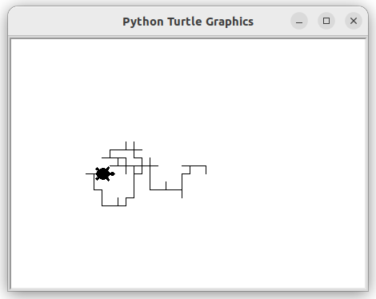
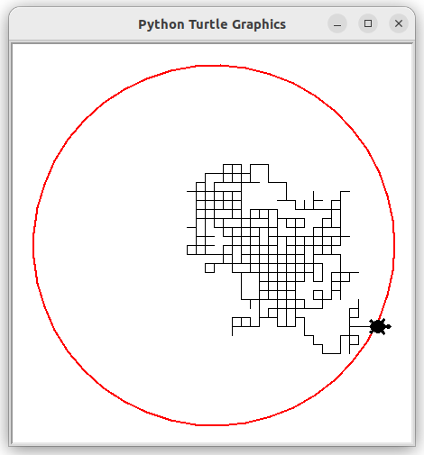
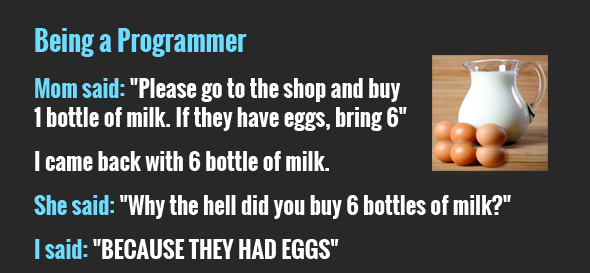

C5 Initiation à Python avec Turtle - Partie 2
Activités
 Activité 1 : Marche aléatoire
Activité 1 : Marche aléatoire
Le but de l'activité est d'utiliser Python (et son module turtle) pour simuler une marche aléatoire. C'est à dire qu'on simule le déplacement d'une tortue initialement situé en (0,0) et qui se déplace aléatoirement de 10 pixels dans l'une des quatre directions avec la même probabilité de \(\dfrac{1}{4}\) pour chaque direction. On donne le début de code suivant :
import turtle
# randint(a,b) permet de tirer un nombre au sort entre a et b
from random import randint
tortue = turtle.Turtle()
papier = turtle.Screen()
# On fixe les dimensions de la feuille de papier
papier.setup(height=450,width=450)
# vitesse et forme de la souris
tortue.speed(0)
tortue.shape("turtle")
-
La fonction
randint- Ce programme importe la fonction
randint, dans Python en mode console, rechercher l'aide sur cette fonction après l'avoir importée - Utiliser cette fonction pour générer un entier au hasard entre 1 et 6
- Ce programme importe la fonction
-
Recopier ce programme, le compléter en écrivant une fonction
pasqui ne prend pas d'argument, et fait avancer la tortue dans l'une des quatre directions cardinales au hasard. -
Ecrire une boucle
forpermettant de simuler une promenade aléatoire de 100 pas (voir ci-dessous pour un exemple de résultat obtenu)  -
Boucle non bornée
- Tracer en rouge le cercle de centre \((0,0)\) et de rayon \(200\).
- On veut déplacer la tortue jusqu'à ce qu'elle franchisse le cercle, peut-on utiliser une boucle
for? - A quelle condition, portant sur ses coordonnées \((x,y)\), la tortue est-elle en dehors du cercle ?
-
Ecrire une fonction
dans_cerclequi renvoieTrueouFalsesuivant que la tortue se trouve ou non dans le cercle. On pourra utilisertortue.xcor()ettortue.ycor()qui renvoie respectivement l'abscisse et l'ordonnée de la tortue.A retenir
L'instruction
returnpermet à une fonction de renvoyer un résultat. -
Ecrire une boucle
whilede façon à ce que la tortue se promène jusqu'à sortir du cercle de centre \((0,0)\) et de rayon \(200\) (voir ci-dessous pour un exemple de résultat) : 
Activité 2 : Les listes de Python
A retenir
Dans cette activité, on utilise pour la première fois les jupyter notebook, c'est à dire des documents contenant à la fois :
- des zones de texte explicatives,
- des zones de code Python, executables directement à la façon de ce qui se passe lorsque Python est en mode console.
A chaque fois, que nous utilisons cet outil, deux choix s'offrent à vous :
-
l'utiliser localement sur votre ordinateur à condition d'y avoir installé jupyter notebook (c'est le cas sur les ordinateurs de la salle). Pour cela, créer un dossier nommé par exemple
Notebooket depuis un terminal lancer jupyter dans ce dossier en écrivant simplement :L'application se lance dans votre navigateur, télécharger le notebook et utiliser le bouton Téléverser en haut à droit pour le télécharger dans votre dossier et l'ouvrir.jupyter notebook -
Utiliser l'application Capytale de votre environnement numérique de travail metice. Dans ce cas, utiliser le lien de partage fourni dans l'activité. Cette option vous permet notamment de travailler depuis la maison car aucune installation (ni de Python, ni de Jupyter) n'est nécessaire.
Les activités utilisant un notebook proposerons donc toujours les deux options décrites ci-dessus.
- Option 1 : Jupyter Notebook
- Option 2 :

Activité 3 : Parcours d'une liste
- Option 1 : Jupyter Notebook
- Option 2 :
Cours
Vous pouvez télécharger une copie au format pdf du diaporama de synthèse de cours présenté en classe :
Attention
Ce diaporama ne vous donne que quelques points de repères lors de vos révisions. Il devrait être complété par la relecture attentive de vos propres notes de cours et par une révision approfondie des exercices.
QCM
1. Une boucle while :
- a) s'exécute tant qu'une condition est vraie et donc peut être infinie.
- b) s'exécute un nombre prédéfinie de fois
- c) s'exécute toujours une infinité de fois
- d) s'exécute jusqu'à ce que l'utilisateur réponde correctement
- a) s'exécute tant qu'une condition est vraie et donc peut être infinie.
- b)
s'exécute un nombre prédéfinie de fois - c)
s'exécute toujours une infinité de fois - d)
s'exécute jusqu'à ce que l'utilisateur réponde correctement
2. Quel sera le résultat de l'exécution du programme Python suivant ?
n = 5
p = 1
while n>0:
p = p*2
- a) Une boucle infinie
- b) Une boucle se répétant cinq fois
- c) Une
Syntax Error - d) Une
Indentation Error
- a) Une boucle infinie
- b)
Une boucle se répétant cinq fois - c)
UneSyntax Error - d)
UneIndentation Error
3. Quelles seront les valeurs des variables s et i à la fin de l'exécution du programme suivant ?
s = 0
i = 1
while i < 5:
s = s + i
i = i + 1
- a)
s=10eti=4 - b)
s=10eti=5 - c)
s=15eti=5 - d) Aucunes car ce programme produit une erreur.
- a)
s=10eti=4 - b)
s=10eti=5 - c)
s=15eti=5 - d)
Aucunes car ce programme produit une erreur.
4. Quelle instruction permet d'exécuter une boucle tant que les variables a et b sont toutes les deux inférieures strictement à 10.
- a)
while a<10 or b<10 - b)
while a<10 or b<10: - c)
while a<10 and b<10 - d)
while a<10 and b<10:
- a)
while a<10 or b<10 - b)
while a<10 or b<10: - c)
while a<10 and b<10 - d)
while a<10 and b<10:
5. Quel sera la valeur de la variable compteur après l'exécution du programme suivant ?
compteur = 1
compteur += 1
- a) Aucune car
+= 1provoque une erreur - b)
compteurvaudra 2 car+= 1permet d'augmenter de 1 une variable - c)
compteurvaudra 0 car+= 1permet de diminuer de 1 une variable - d)
compteurvaudra 1 car+= 1ne modifie pas sa valeur
- a)
Aucune car+= 1provoque une erreur - b)
compteurvaudra 2 car+= 1permet d'augmenter de 1 une variable - c)
compteurvaudra 0 car+= 1permet de diminuer de 1 une variable - d)
compteurvaudra 1 car+= 1ne modifie pas sa valeur
6. Que vaut la variable a après exécution de l'instruction a=[0.5*x for x in range(4)] ?
- a)
[0.0,0.5,1.0,1.5,2.0] - b)
[0,1,2,3,4] - c)
[0,1,2,3] - d)
[0.0,0.5,1.0,1.5]
- a)
[0.0,0.5,1.0,1.5,2.0] - b)
[0,1,2,3,4] - c)
[0,1,2,3] - d)
[0.0,0.5,1.0,1.5]
7. Si alpha=["A","B","C","D","E","F","G","H"] quelle est l'expression permettant d'accéder à la lettre "E" ?
- a)
alpha4 - b)
alpha[4] - c)
alpha(4) - d)
alpha.E
- a)
alpha4 - b)
alpha[4] - c)
alpha(4) - d)
alpha.E
Exercices
Exercice 1 : Génération de listes en Python
-
On considère le programme suivant :
liste1 = [0]*100 liste2 = [0 for k in range(100)] liste3 = [] for k in range(100): liste3.append(0)- Quel est le contenu de chacune des listes ?
- Indiquer par quel procédé chacune de ces listes a été crée.
-
Ecrire un programme python permettant de créer les listes suivantes :
- Une liste contenant 12 fois le chiffre 7.
- La liste des nombres entiers de 1 à 100.
-
Une liste contenant 1000 nombres tirés au sort entre 1 et 6.
Aide
On rappelle que la fonction
randintpeut être importer depuis le modulerandom, elle permet de tirer un nombre en deux valeursaetbdonnées en paramètres. -
La liste des cubes des entiers de 1 à 10.
Exercice 2 : Parcours de listes en Python
On suppose qu'on dispose d'une liste de notes, on veut écrire une fonction qui renvoie le nombres de notes qui sont en dessous de la moyenne.
-
On considère une première version de cette fonction :
def inferieur_moyenne(liste_notes): nb = 0 for note in liste_notes: if .....: nb = ....... return ...- Recopier et compléter cette fonction
- Tester cette fonction
-
Voici une deuxième version de cette fonction :
def inferieur_moyenne(liste_notes): nb = 0 for indice in ........: if ........... : nb = ....... return ...- Recopier et compléter cette fonction
- Tester cette fonction
-
Quelle est la différence principale entre ces deux versions de la même fonction ?
-
Ecrire les fonctions suivantes :
somme_listequi prend comme argument une liste non vide de nombres et renvoie la somme de ces nombres.moyenne_listequi prend comme argument une liste non vide de nombres et renvoie la moyenne de ces nombres.max_listequi prend comme argument une liste non vide de nombres et renvoie le plus grand de ces nombres.min_listequi prend comme argument une liste non vide de nombres et renvoie le plus petit de ces nombres.
Exercice 3 : Recherche d'occurences
- Ecrire une fonction
present(elt,liste)qui renvoieTruesieltse trouve dans la listelisteetFalsesinon. Par exemplepresent(3,[1,4,5])renvoieFalse, par contrepresent(4,[1,4,5])renvoieTrue. - Tester cette fonction
- Ecrire une fonction
occurence(elt,liste)qui renvoie le nombre de fois oùeltapparaît dansliste.
Exercice 4 : Chaines de caractères
- Ecrire une fonction
compte_caractere(s,c)qui prendre en argument une chaîne de caractèreset un caractèrecet retourne le nombre de fois oùcapparait danss. Par exemplecompte_caractere("informatique","i"")renvoie 2 puisqu'il y a deuxidans le motinformatique - Ecrire une fonction
inversequi prend en argument une chaîne de caractère et retourne cette chaîne écrite à l'envers. Par exemple,inverse("Python")donnera"nohtyP". - Ecrire une fonction
comparequi prend en argument deux chaînes de caractères et renvoie le nombre de fois où ces deux chaines on la même lettre au même emplacement. Par exemple,compare("Python","Poterie")retourne 2 car le "P" et le "t" sont situés aux mêmes emplacements dans les deux mots.
Exercice 5 : S'entrainer sur des exercices en ligne
Le site e-nsi propose des exercices permettant de s'entrainer à la programmation directement dans le navigateur sans aucune installation (ni de Python, ni de VsCode). Pour faire le bilan de ce chapitre, on pourra faire les exercices suivants :
- Nombre de bits pour revoir les fonctions, les boucles
whileet réviser l'écriture binaire. - Indice ou valeur pour vérifier qu'on a bien compris les parcours par indice ou par élément.
- Autour de range pour revoir
rangetrès utile pour l'écriture de bouclefor - Anniversaire de chat pour un exercice bilan (instruction conditionnelle, fonction)
Humour d'informaticien
